Devil May Cry 4 es un videojuego de acción-aventura y hack and slash desarrollado y publicado por Capcom para la PlayStation 3, la Xbox 360 y PC en 2008. El juego es la cuarta entrega de la serie Devil May Cry, posteriormente fue lanzado el 3 febrero de 2011 una versión portátil para iPhone, iPod touch y iPad titulada Devil May Cry 4: Refrain. Cronológicamente es la tercera parte de la historia, el juego se sitúa entre el original Devil May Cry y Devil May Cry 2.
La historia sigue a Nero, un adolescente que posee poderes demoníacos que se encuentra en una misión para detener personaje principal de la serie, Dante, después de que éste asesinara a varios miembros de la Orden de la Espada incluyendo a su líder. Al comienzo el jugador controlara a Nero durante la primera mitad del juego para después jugar con Dante en la otra mitad mientras se combate contra los enemigos en un combate cercano, ya sea usando armas de fuego, espadas u otra clase de armas y habilidades que se podrán adquirir a lo largo del juego. Devil May Cry 4 fue la primera entrega de la serie en ser liberada para múltiples consolas al mismo tiempo; durante su desarrollo, Capcom se centró en todas las versiones, para que alcanzaran la misma calidad visual.
La recepción de Devil May Cry 4 fue positiva, elogiando principalmente su alta y desafiante dificultad y los movimientos especiales de los personajes. Sin embargo, el juego fue fuertemente criticado por su backtracking y algunos problemas con la cámara. Actualmente el juego ha vendido más de 3 millones de unidades en todo el mundo, convirtiéndose en el título más vendido de la serie. También ha sido adaptado a una novela visual de dos volúmenes por su escritor original Bingo Morihashi.
El 15 de diciembre de 2014, Capcom anuncio una versión remasterizada del juego titulado Devil May Cry 4: Special Edition para ser lanzado en junio de 2015 para la PlayStation 4, Xbox One y PC. El juego añade dos pista de voz: en Inglés y Japonés (pero solo para la versión japonesa del juego, la versión internacional mantiene las voces en inglés), mejora de los efectos visuales y texturas, combate re-balanceado, trajes adicionales y 3 nuevos personajes jugables: Vergil que regresa de Devil May Cry 3, Trish siendo jugable por primera vez desde Devil May Cry 2, y Lady quien aparece por primera vez como personaje jugable en la franquicia.
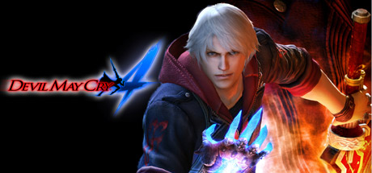En la costa de una remota tierra yace la ciudad fortificada de Fortuna. Aquí, el grupo conocido como "la Orden de la Espada" practica una misteriosa religión. Adoran al demonio guerrero Sparda, protector de la humanidad, como a un dios, a la vez que llevan a cabo su cometido, el exterminio de todos los demonios. Nero, un joven caballero de la Orden, es el elegido para dar caza a Dante, el misterioso asesino del líder de la Orden de la Espada. Al mismo tiempo, una ingente cantidad de demonios comienza a infestar toda la ciudad. ¿Tendrán relación estos eventos...? Pronto, Nero comprenderá el porqué de la aparición de Dante, y las verdaderas intenciones de la Orden de la Espada.
| Armas de Nero | |||
|---|---|---|---|
| Red Queen | Blue Rose | Devil Bringer | Yamato |
| 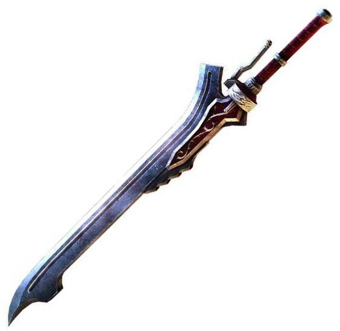 | 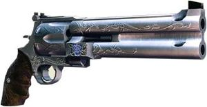 | 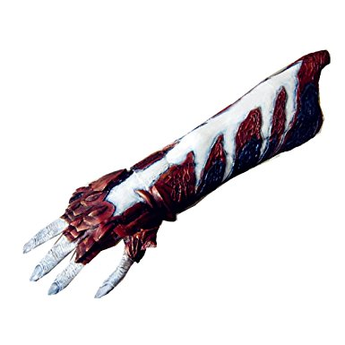 | 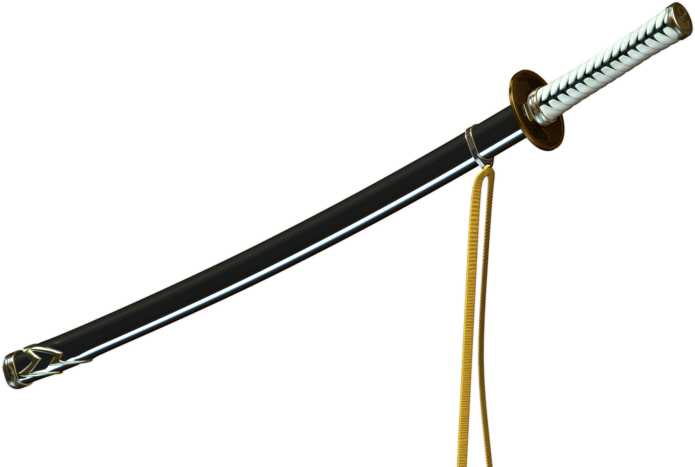 |
| Armas de Dante | |||||
|---|---|---|---|---|---|
| Rebellion | Ebony & Ivory | Coyote-A | Gilgamesh | Pandora | Lucifer |
| 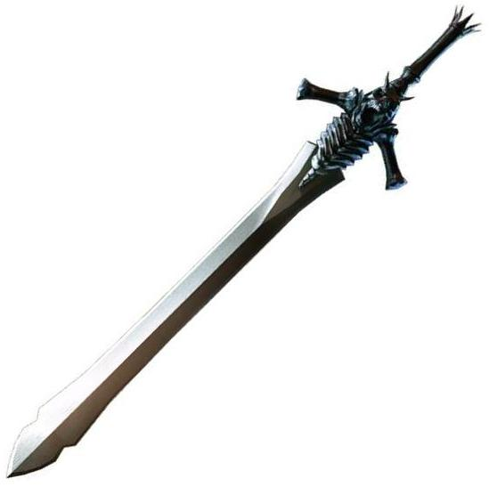 | 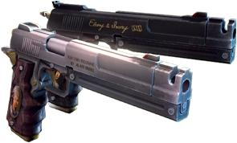 | 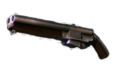 | 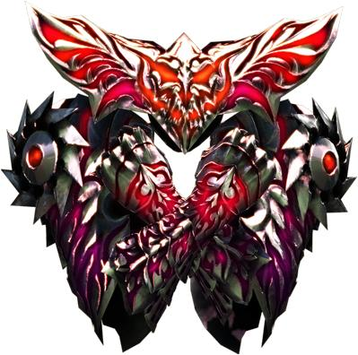 | 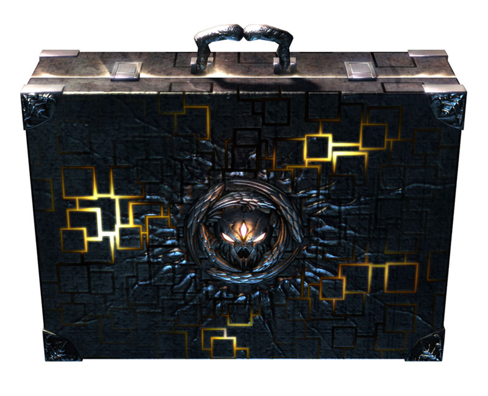 | 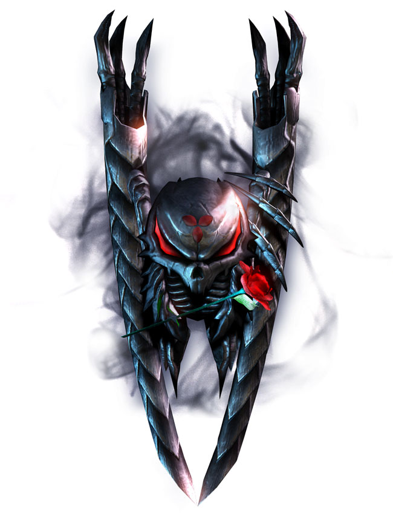 |
En la escena en la que Nero lucha contra Berial, al apagar las llamas, se puede leer en un cartel "Mundus", el cual era el nombre del antagonista del primer Devil may cry.
De igual manera, en el epilogo de DMC 4, Dante está leyendo una revista,y Trish se la quita, cuando dante la recupera, se puede ver que en la revista sale lady y en una esquina dice "devil may cry 4"